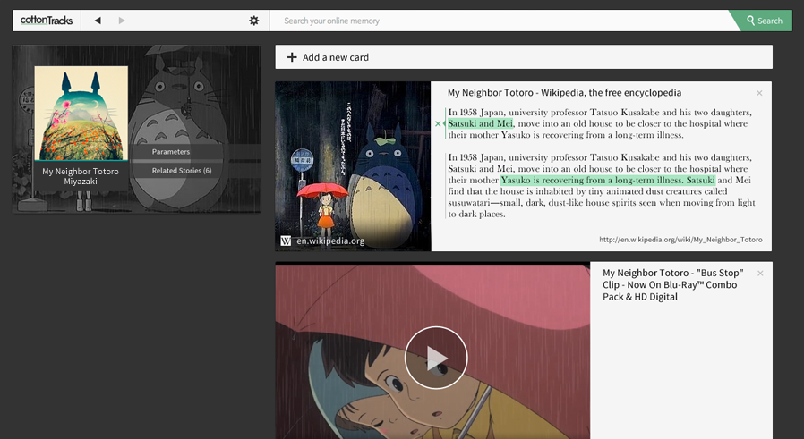
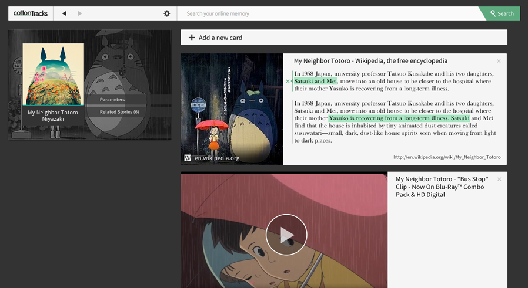

The only browser history you will ever want to keep
cottonTracks is an automated and curated record of the best content you experience on your web browser. It replaces your history and bookmarks while maintaining a stunning summary of your insights and influences. Navigate as usual and we take care of organizing your favorite content seamlessly.
An intelligent record of your interests
Our algorithms create collections of interesting articles, videos, images and maps based on how deeply you investigate a particular subject. Search and browse a few pages around the same idea and the app will remember and organize the information automatically.
Tonari no Totoro Miyazaki
The Legend of Zelda
Michael JacksonJam Tour
cottonTracks creates stories for you where you can find everything you know about a subject.
This collections are like a smart playlist of your web.
Stop bookmarking
We believe in an unobtrusive and smart way of defining your own web. The time of searching in an undifferentiated mass of information and collecting references by hand is over.
 

A private and clear history of your navigation
You should not have to worry about the location of your data, especially the intimate one. Your browser history is never sent to a server and the app entirely runs within your computer.
cottonTracks filters by default explicit content in order to preserve the quality of your collections.
Also, we parse content, not people. You can use cottonTracks without any log in.
> Read more about how we treat privacy in our FAQ.